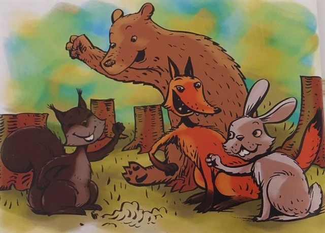

Šuma život znači
Lica: ВЕРИЦА ВЕВЕРИЦА, ЗЕКАН УШЕКАН, МЕДО ЧЕДО и ЛИЈА ПРИЈА
ВЕРИЦА ВЕВЕРИЦА: (Копа рупу и ставља нешто у њу, а затим је закопава предњим шапама.)
ЗЕКАН УШЕКАН: Ох, Верица Веверица, шта то тако вредно радиш? Да ли можда шаргарепу садиш?
Тако ми мог зечјег њуха и репа да није у рупи шаргарепa?
ВЕРИЦА ВЕВЕРИЦА: Не брини, Зекане Ушекане, твоје уши не треба да стрепе.
Нема у рупи сочне шаргарепе.
ЗЕКАН УШЕКАН: Штета. А тако бих волео да је шаргарепа.
ЛИЈА ПРИЈА: Извињавам се , из Верице, што сам радознала. А да није у рупу кока залутала?
ВЕРИЦА ВЕВЕРИЦА: Нажалост, Лијо Пријо, од коке нема ни квоц ни квокода.
Мораћете да вечерате оно што вам природа да.
ЛИЈА ПРИЈА: Баш штета. Нарочито због мог репа. Аха! Ево Меде Чеде.
Он сигурно зна шта је у рупи да се једе.
МЕДО ЧЕДО: Наравно да знам! Медо Чедо је паметан и промоћуран.
Тако ми крзна и дрвореда, унутра је пуна кошница меда!
ВЕРИЦА ВЕВЕРИЦА: Медо Чедо, жао ми је. Али у рупи мед није.
ЛИЈА ПРИЈА: Аууу...Ко онда зна шта је то? Да није јаје?!
ЗЕКАН УШЕКАН: Тако ми зечјег заната, да није зелена салата?
МЕДО ЧЕДО: Тако ми њушке, да нису крушке?
ВЕРИЦА ВЕВЕРИЦА: Мир! Мир! Мир! Ево, открићу вам тајну. У рупи је жир!
СВИ:Жир!
ВЕРИЦА ВЕВЕРИЦА: Да ли сада разумете шта радим? Жир садим.
МЕДО ЧЕДО: Тако ми зреле диње. Па жиреве једу дивље свиње! Јел тако?
ВЕРИЦА ВЕВЕРИЦА: Не садим га неко смаже у сласт, већ из њега израсте храст.
ЛИЈА ПРИЈА: Шта ће нам храст?! Дај нам мед! Хоћемо маст!
ЗЕКАН УШЕКАН: И купусовог листа, да нам срећа заблиста!
ВЕРИЦА ВЕВЕРИЦА: Па, драга моји, док ви мислите на храну, неко нам у шуми сече грану
по грану. Док имате на јело на уму, неко уништава нашу шуму. Погледајте ове тужне птиће. Погледајте њихова
уништена гнезда. Погледајте увеле листиће и на небу хилљаду звезда. Некада су уживали у хладу, а сада су им
посекли наду. Зато сада вредно садим жир по жир да шуми вратим спокој и мир. А ви, ви мислите само како
да кркате! Стидите се свих који сада пате.
МЕДО ЧЕДО: Истина, размишљао сам о својој срећи.
ЗЕКАН УШЕКАН: А ја како ћу од глади побећи.
ЛИЈА ПРИЈА: И ја, кога ћу наивног за храну прећи.
ВЕРИЦА ВЕВЕРИЦА: Надам се да сте сада научили нешто паметно.
ЗЕКАН УШЕКАН: Јесмо.(Дошаптава се са Лијом и Медом) Е, па, Верице Веверице,
ми смо нешто паметно одлучили...
ВЕРИЦА ВЕВЕРИЦА: Шта сте одлучили?
МЕДО ЧЕДО: Да радимо!
ЛИЈА ПРИЈА: Да се удружимо!
ЗЕКАН УШЕКАН: Да шуму садимо и природи служимо!
СВИ: Одрасли свете, имајте на уму, веома је важно чувати шуму.
Нека из тебе доброта зрачи, јер шума планети опсанак значи.
